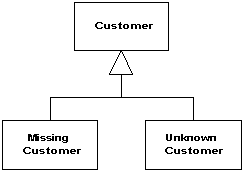

Special Case (Особый Случай)

Паттерн проектирования Special Case
Описание Special Case
Подкласс, содержащий особую логику для отдельных ситуаций.
Null-значения в ООП - неуклюжая вещь, так как она зарубает на корню полиморфизм. Обычно есть возможность вызова какого-либо метода на переменной заданного типа без необходимости беспокоиться о том, принадлежит ли эта переменная конкретному классу или подклассу. В строго типизированных языках эту проверку делает компилятор. Тем не менее, из-за того, что переменная может содержать null, существует опасность возникновения ошибки во время выполнения, при вызове метода на null-значении.
Если переменная может принимать значение null, вам нужно постоянно заботиться о проверках на null и правильной обработке null-значений. Часто, эта "правильная обработка" одинакова во большинстве случаев, и всё это заканчивается совершением греха дублированием кода (дословный перевод Мартина Фаулера).
Null-значения - яркий пример таких проблем, которые возникают постоянно и внезапно. А их много. Например, во многих системах приходится работать с бесконечностью, которая имеет особые правила для, например, сложения и нарушает обычные аксиомы, справедливые для натуральных чисел. Такие случаи предполагают изменение обычного поведения типа.
Вместо того, чтобы возвращать null или какое-то дополнительное значение, верните Special Case (Особый Случай) - объект с тем же интерфейсом, но ведущий себя иначе, чем основной.
Использована иллюстрация с сайта Мартина Фаулера.